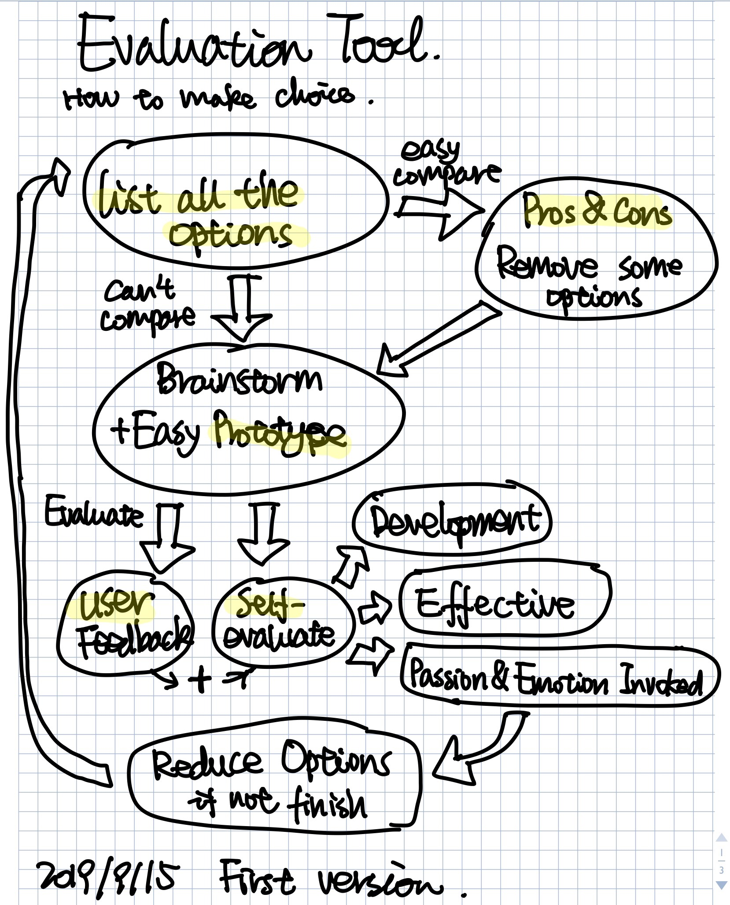
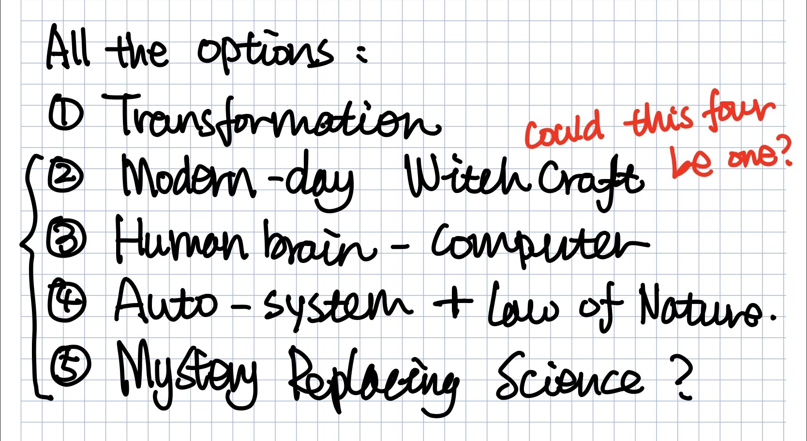
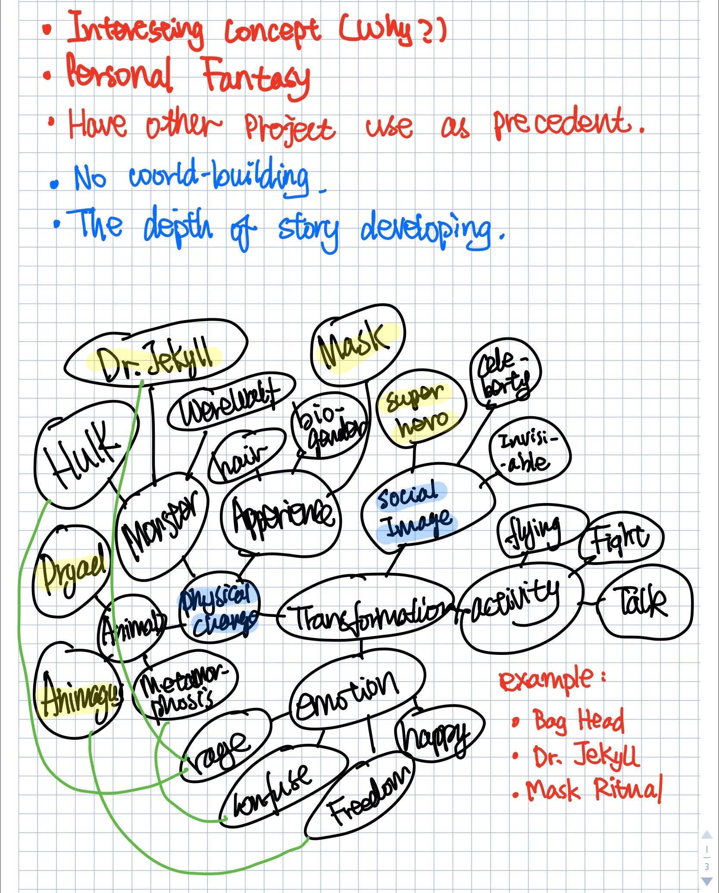
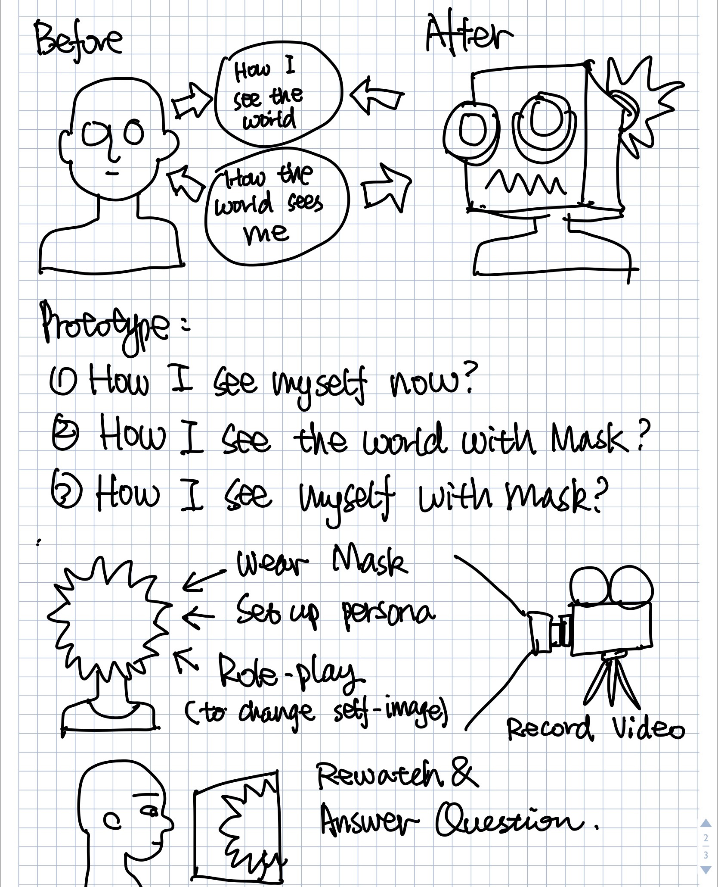
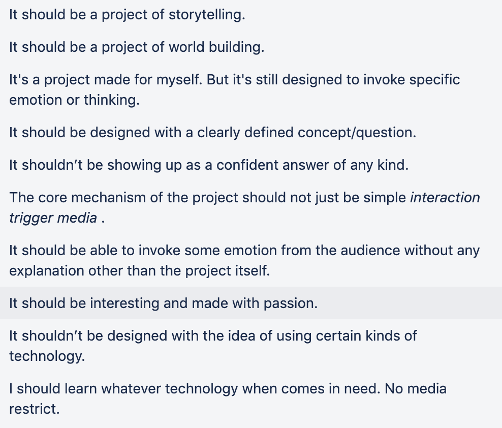

Week 3 Reflection
Thinking Process:
For this week is bit chaotic cause there are so many things starting to take place. I made my Trello timeline and start trying to figure out what concept I want to work with. After one on one with Liza it was very helpful and I figured out there are some things I need to do:
- Set up an evaluation tool for making choice.
- Cause I’m not sure what to choose I will do a small 4in4 on every topic I’m interested in.
- Decide on the audience.
- Think about possible form it might take to decide which one to choose.
This is a lot of work and I don’t think I’ll be able to finish all of them in four days. I think I’ll make this my plan from last Thursday to next Monday. More details of the plan at the end of the post.
Evaluation tool
Making decisions had always been one of the hardest things to do in my life and I think having a system to help make decisions is a good thing. I’m still not 100% sure about this process cause this is still decision making so… but I don’t think I’ll every be satisfied by the decisions I made, so I think it’s just nice to have something to stand on. I’ll try to follow this process this week and make alteration if something doesn’t work.
4IN4 (keep updating):
As for right now I have five possible directions I might choose from:
And then on Friday when I was doing assignment from my Speculative Science for Design Fiction class and we came up a story of future bards. In our world an organization decide to protest to big corporations using the old way of bards. They will wear masks and hide their face and then walk around the world protest by telling their stories in the face to face way. I found this story very interesting and want to figure out what makes it so appealing to me. Cause besides the transformation concept the rest are all based on plots that made me feel exciting.
I looked into the story and I think the part that interested me the most is the part where bard and technology collide and cause the inventions we call technology today came up after bards were mostly gone and this kind of dislocation and splice just have so many potentials. I think this might be the same reason I’m interested in the other four topics, which all contains some level of this kind of dislocation and splice. So I grouped those topics into two and I did my first 4in4 on transformation and I’ll spend more time research on that dislocation first and then see if I can combine those ideas.
 Weekly Reflection:
Update Thesis Rules:
Plan for next week:
1) Research & Mind-maps On Self-evaluation Due: 9/16
2) Finsih 4in4 Due: 9/17
3) Brain Storm on final project Due: 9/18
4) Start Working On Draft of Audience Due: 9/20
09/09/2019 I'm intense.